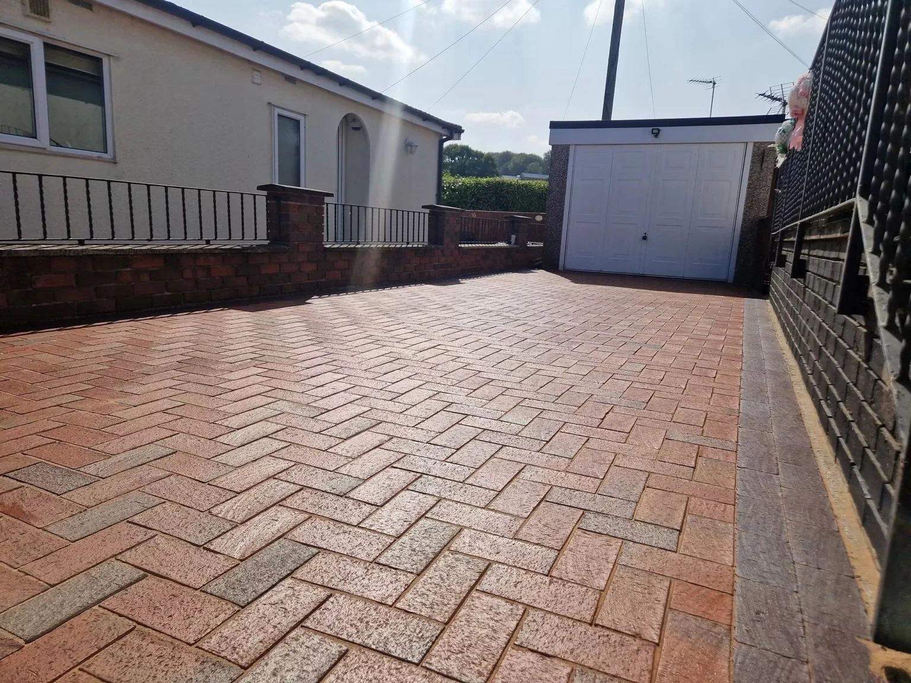

DrivewaysBlock paving & concrete
Patios & pathsOutdoor paving & seating areas
Render cleaningA fresher exterior finish
GuttersGutter-cleaning enquiries
A BETTER FIRST IMPRESSION
Reveal the colour.
Surface dirt and staining can hide the finish of your paving and exterior walls. Ashton Exterior offers cleaning enquiries across Findern and Derby, with driveway, patio, render and concrete-area projects in the portfolio.
Explore the results, then send your postcode and photographs to discuss the work at your property.
Tell us about your space →

EXTERIOR WALLS
A fresher face.
Matching views of this home show stained render before cleaning and the brighter finish afterwards. Tap either photograph to view the whole house exterior.
Render cleaning →BEFORE & AFTER
See the difference.
Project views kept together so you can follow the change. Tap a photograph to see the complete image.
Concrete refresh
The same fenced area before and after cleaning, showing the lighter concrete finish.
Driveway transformation
Before, during treatment and after cleaning: three views of the same front driveway.
PAVING IN DETAIL
Fresh from the ground up.
Different views of cleaned block paving show the colour and pattern beside the house and garage. The garden path completes the picture of the outdoor spaces.
Patios & paths →
ASHTON · FINDERN & DERBY
Care for the outside.
Ashton Exterior takes enquiries for driveways, patios, gutters and exterior cleaning. Share the areas you want to improve and discuss a suitable approach for the material and condition.
01
Show the surface
Send an overview and close-up photos of the areas that need attention.
02
Share the details
Your postcode, approximate size and access information help explain the job.
03
Discuss the work
Contact Ashton to talk through the cleaning and availability.
REQUEST A QUOTE
What needs a clean?
Choose a service and tell us about the job. The form opens WhatsApp with your details ready to send. You can add photos there.
Findern and Derby. Include your postcode so coverage and access can be confirmed.
Call 07523 711847
ashtonratcliffe16@gmail.com
Your details are only shared when you send the message. Privacy information.
GOOD TO KNOW
A few answers.
Where do you work?
Ashton Exterior covers Findern and Derby. Include your postcode with your enquiry to discuss your location and availability.
What can I enquire about?
Driveways, patios, paths, render and gutter cleaning. Send photographs of the surfaces you want to improve.
What should I send for a quote?
Your postcode, photographs, approximate measurements and a short description of the work. Include access details and any known damage.
Do you clean block paving?
The portfolio includes cleaned block driveways and a front-driveway cleaning sequence. Share the area and condition of your paving when you enquire.
Can I ask about render cleaning?
Yes. The matching house photographs show a render-cleaning project. Share close-up and wider photos so the surface and access can be discussed.
Do you take gutter-cleaning enquiries?
Yes. Gutter cleaning is listed among Ashton’s services. Include the building height, access and a description of the issue.
Will every surface need the same approach?
The material and its condition affect the cleaning approach. Explain the type of surface and any existing problems before work is agreed.
ASHTON EXTERIOR
Ready for a refresh?
Findern & Derby · Exterior jetwashing and cleaning
ashtonratcliffe16@gmail.com